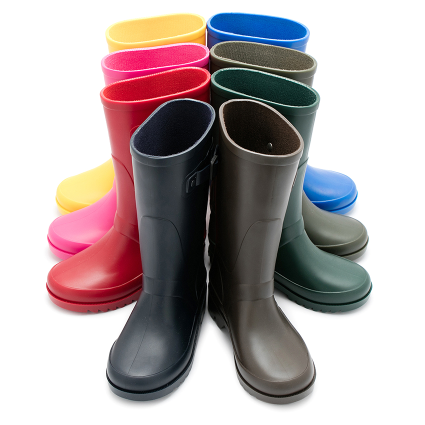

Galocha é uma bota de borracha que se calça para proteger os pés do contacto com a água,
preservando-os da humidade. Em algumas regiões, mediante o desuso e o declínio das antigas galochas,
o termo passou a designar qualquer tipo de calçado, mais precisamente de bota, feito de borracha ou outro material
impermeável e sem cadarços, para proteger da chuva ou da umidade. São voltadas principalmente para o uso em diferentes
atividades profissionais, oferecendo proteção reforçada contra condições adversas de tempo, acidentes e outros.
A palavra passa pelo francês (galoche) e latim e originalmente significava a forma de um sapateiro;
literalmente "madeira" + "pé". No século 14, ele foi transferido para tamancos de estilo inglês, ou seja, aqueles com
sola de madeira e parte superior de tecido (por exemplo, couro). Em 1572, o termo também se aplicava a "um Gallage ou Patten";
isto é, uma sapatilha com uma base de madeira moldada para levantar do chão os sapatos bons do usuário.
Como anteriormente referido, nos dias de hoje, as galochas são qualquer tipo de calçado, em forma de bota, feito de borracha ou
outro material para proteger da chuva, sendo utilizado até como uma peça de vestuário normal, afastando-se da ideia do seu uso laboral.
Exemplos de Galochas